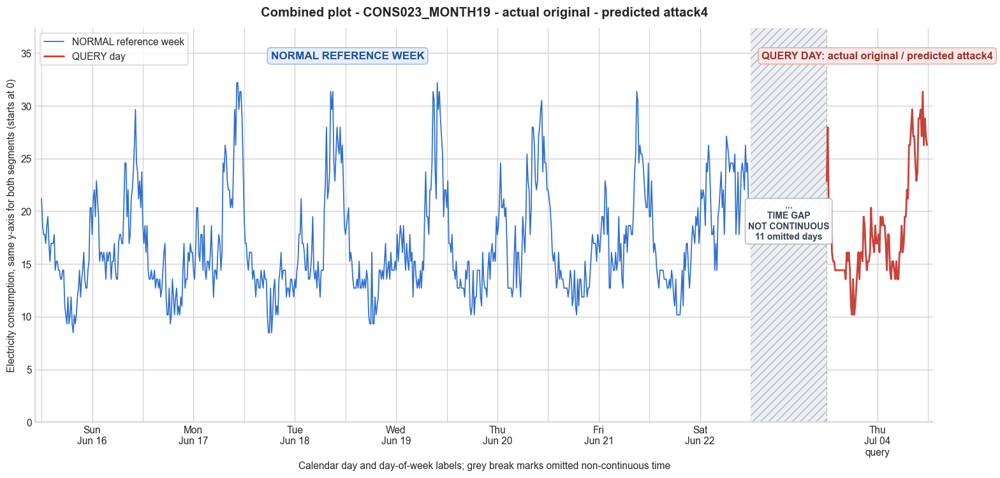

CONS023_MONTH19 · actual original · predicted attack4
- Pair
- CONS023_MONTH19
- GT
- original
- Prediction
- attack4
- Binary GT
- original
- Binary Prediction
- attacked
- Source
- E010
- Parse
- stored
- Date
- 2013-07-04
- Weekday
- Thursday
- Latency
- 1.91 min
- Tokens
- 9913

Final output
Classification: Manipulated Identified Attack: - Most Likely: Attack 4 - Confidence: High - Reasoning: The query day exhibits an anomalous flat segment of 10 consecutive identical readings (14.41) from index 8 to 17, absent in the reference week. This indicates a period-specific reduction to a constant value, exactly corresponding to the definition of Attack 4 (theft over a randomly selected period where all measurements are reduced). Attack 2 (on‑off) would produce zeros, not a constant; Attack 6 (cut‑off) would cap the entire day’s readings and conflict with later peaks up to 31.36, both of which are ruled out. Attack_Behavior_Explanation: - The attacker replaced the genuine consumption values over a roughly 2.5‑hour interval (late morning) with a constant moderate reading of 14.41, instead of the natural fluctuating demand seen in the reference Thursday (range ~11.86–15.25). This manipulation flattens the normal trend during that window and slightly suppresses the magnitude locally, though the overall daily average remains close to typical because other periods are untouched. - Impact: The trend is altered by introducing an artificial plateau; magnitude is moderately reduced over the attacked period. - Possible technical causes: False data injection, temporary meter bypass, or magnetic interference forcing the meter to report a fixed value.
Prompt
You are a domain expert in smart grid security and electricity theft analysis, with deep knowledge of non-technical loss (NTL) attack patterns in smart meters. You are given: 1. A plot of one week of original (normal) energy consumption for a smart meter, provided as context for the customer's typical consumption behavior. 2. A plot of one day of energy consumption for the same smart meter, which may or may not be manipulated. Below are common attack types, each defined by how consumption values are altered, their impact on magnitude and trend, and their possible technical causes. Attack 0: Generated by replacing all electricity consumption samples with zero values for the entire observation duration. Simulates a scenario where no energy usage is reported at all. May be caused by a total meter bypass or severe meter malfunction. Completely eliminates both the trend and magnitude of the consumption profile. Attack 1: Multiplies the actual energy consumption by a constant random value between (0,1). The lower the factor, the higher the severity. Can be triggered by meter bypass, magnetic interference, reverse current, and false data injection. The consumption trend remains the same but the magnitude is uniformly reduced. Attack 2: Generated by replacing consumption samples with zeros for a random duration. Also known as an on-off attack. Can be caused by full meter bypass, false data injection, and reverse current. Changes both the trend and amplitude. Attack 3: The actual consumption is multiplied by different random factors between 0 and 1, with a unique factor per sample. Similar to Attack 1 but the scaling factor varies per reading. Caused by meter bypass, magnetic interference, and reverse current. Changes both the trend and amplitude. Attack 4: Simulates energy theft over a randomly selected period within the observation window. All measurements in that period are reduced. Caused by meter bypass, magnetic interference, reverse current, and false data injection. Changes both the trend and amplitude. Attack 5: Each sample is replaced by a false value obtained by multiplying the average normal consumption by a random variable between 0 and 1, with a different variable per sample. Caused by false data injection. Produces a completely different pattern from the original consumption profile, changing both trend and magnitude. Attack 6: A random cut-off point is selected and all consumption values above it are replaced by that cut-off value. The attacker avoids exceeding a predefined maximum limit. Mainly caused by false data injection. Changes both the trend and amplitude. Attack 7: A random cut-off point is subtracted from each sample; if the result is negative, zero is reported. Similar to Attack 6 but replaces exceeding values with zero instead of the cut-off point. May be caused by false data injection or total meter bypass. Does not change the trend but reduces overall consumption. Attack 9: All samples are replaced by the average daily energy consumption, resulting in a flat constant profile. Easily detectable because constant consumption does not reflect normal customer behavior. Caused by false data injection. Eliminates all trends. Attack 10: Reverses the consumption pattern without reducing the total amount. Applicable when the electricity company uses time-varying pricing, allowing the attacker to shift high consumption to off-peak periods. Caused by false data injection. Changes the trend without decreasing total consumption. Attack 12: The attacker replaces their consumption pattern with that of a lower-consuming user. The legitimate user unknowingly pays the adversary's electricity bill. Caused by false data injection. Attack IEEE: For each 15-minute interval across the entire day, the consumer either reports the actual electricity consumption or substitutes it with zero. The result is a profile where some intervals reflect real consumption while others are zeroed out, creating an irregular pattern across the full day. May be caused by false data injection. Changes both the trend and amplitude. Given the two plots, determine: 1. Whether the day is attacked or original - compare the flagged day against the normal week and assess whether the consumption pattern is consistent with normal behavior or shows signs of manipulation. If the day is consistent with the customer's typical consumption behavior, classify it as original and provide no further analysis. If manipulation is detected, proceed to point 2. 2. Which attack type this most likely is - identify the single most probable attack and justify your choice based on how the flagged day deviates from the normal week. 3. The behavior of the identified attack - explain how the consumption values are manipulated, their impact on magnitude and trend, and the possible technical causes behind this type of attack. Output Format: Classification: - Original | Manipulated Identified Attack: (fill only if manipulated) - Most Likely: Attack X - Confidence: High | Medium | Low - Reasoning: Why it matches Attack X and why Attack Y and Attack Z were ruled out (list top 2 alternatives considered) Attack_Behavior_Explanation: (fill only if manipulated) - How consumption values are manipulated relative to the normal week - Impact on magnitude and trend - Possible technical causes
Reasoning content
We are asked to determine if the query day (DAY_ID=4) is original or manipulated, based on comparison with the reference week. We have the query day data, and the reference week data for 7 days. The query day is labeled as DAY_ID=4, but note that the reference week days are DAY_ID 0 to 6. The metadata says for query day: DAY_ID=4, cal_month=7, dow=3, dom=18. For reference day 4: cal_month=6, dow=3, dom=4. So it's a different week (month 7 vs month 6, day of month 18 vs 4). The reference week is likely the previous week? They are both Thursday (dow=3). So we compare the consumption pattern of this Thursday with the typical behavior from the reference week, especially the Thursday of reference week (DAY_ID=4) and the general pattern. Let's analyze the statistics first. Reference week per-day stats: Day 0: mean 16.62, min 8.47, max 29.66, std 4.25 Day 1: mean 16.84, min 9.32, max 32.20, std 5.49 Day 2: mean 16.30, min 8.47, max 31.36, std 5.24 Day 3: mean 16.58, min 9.32, max 32.20, std 5.11 Day 4 (Thursday): mean 17.20, min 10.17, max 30.51, std 5.01 Day 5: mean 16.84, min 10.17, max 31.36, std 4.40 Day 6: mean 18.34, min 10.17, max 27.12, std 4.59 Query day: mean 18.27, min 10.17, max 31.36, std 5.09. The mean of the query day (18.27) is slightly higher than the reference Thursday mean (17.20), and the max is 31.36 vs 30.51. The min is same. The standard deviation is similar (5.09 vs 5.01). These aggregate stats don't show obvious manipulation like a drastic reduction in consumption. But we need to look at the temporal pattern. The query day might have a similar shape but with some differences. Let's examine the 96 readings. I'll list the query day readings: Index from 0 to 95 (15-min intervals). Query day: 0: 22.88 1: 27.97 2: 19.49 3: 17.80 4: 20.34 5: 16.10 6: 15.25 7: 15.25 8: 14.41 9: 14.41 10: 14.41 11: 14.41 12: 14.41 13: 14.41 14: 14.41 15: 14.41 16: 14.41 17: 14.41 18: 13.56 19: 16.10 20: 15.25 21: 16.10 22: 14.41 23: 11.02 24: 10.17 25: 13.56 26: 10.17 27: 11.02 28: 12.71 29: 14.41 30: 16.10 31: 13.56 32: 16.10 33: 16.10 34: 15.25 35: 19.49 36: 18.64 37: 16.10 38: 14.41 39: 15.25 40: 15.25 41: 16.10 42: 20.34 43: 17.80 44: 16.95 45: 16.10 46: 18.64 47: 16.95 48: 16.95 49: 17.80 50: 16.10 51: 19.49 52: 18.64 53: 19.49 54: 18.64 55: 18.64 56: 16.95 57: 14.41 58: 17.80 59: 17.80 60: 14.41 61: 13.56 62: 15.25 63: 15.25 64: 14.41 65: 13.56 66: 15.25 67: 13.56 68: 13.56 69: 16.10 70: 16.10 71: 18.64 72: 16.10 73: 16.95 74: 19.49 75: 19.49 76: 22.03 77: 21.19 78: 26.27 79: 26.27 80: 27.97 81: 29.66 82: 27.12 83: 27.12 84: 24.58 85: 22.88 86: 23.73 87: 28.81 88: 28.81 89: 29.66 90: 27.12 91: 31.36 92: 26.27 93: 28.81 94: 27.12 95: 26.27 Now compare to reference Thursday (Day 4 from reference week): Reference Day 4: 0: 20.34 1: 22.88 2: 16.95 3: 16.95 4: 16.10 5: 17.80 6: 14.41 7: 14.41 8: 13.56 9: 15.25 10: 12.71 11: 12.71 12: 12.71 13: 13.56 14: 12.71 15: 12.71 16: 12.71 17: 11.86 18: 14.41 19: 13.56 20: 15.25 21: 15.25 22: 11.02 23: 10.17 24: 11.02 25: 14.41 26: 10.17 27: 11.86 28: 11.86 29: 14.41 30: 14.41 31: 14.41 32: 11.86 33: 11.02 34: 16.10 35: 13.56 36: 12.71 37: 12.71 38: 11.86 39: 14.41 40: 16.10 41: 13.56 42: 16.10 43: 16.95 44: 15.25 45: 16.10 46: 15.25 47: 19.49 48: 17.80 49: 18.64 50: 21.19 51: 24.58 52: 20.34 53: 20.34 54: 21.19 55: 19.49 56: 20.34 57: 16.95 58: 12.71 59: 12.71 60: 12.71 61: 12.71 62: 11.86 63: 12.71 64: 16.10 65: 18.64 66: 12.71 67: 16.10 68: 16.10 69: 13.56 70: 11.86 71: 15.25 72: 19.49 73: 17.80 74: 16.10 75: 19.49 76: 25.42 77: 22.88 78: 22.03 79: 17.80 80: 20.34 81: 27.97 82: 27.97 83: 26.27 84: 22.88 85: 22.03 86: 22.88 87: 27.12 88: 27.97 89: 29.66 90: 30.51 91: 23.73 92: 27.12 93: 24.58 94: 24.58 95: 22.03 Visual comparison: Both have similar patterns: high in the morning (first few readings), then a dip, then a peak in the evening. The query day has some interesting flat regions: from index 8 to 17 (10 readings) value 14.41 repeated exactly. Let's check: indices 8-17: 14.41, 14.41, 14.41, 14.41, 14.41, 14.41, 14.41, 14.41, 14.41, 14.41. That's 10 consecutive readings of exactly 14.41. Also later, index 78-79: 26.27, 26.27; 82-83: 27.12, 27.12; 88-89: 28.81, 28.81. Some repeats are normal, but 10 consecutive identical values is very suspicious. In reference day 4, we don't see such a long stretch of identical values. There are some repeated values (e.g., indices 6-7: 14.41,14.41; 10-11: 12.71,12.71; 14-15: 12.71,12.71; 16-17: 12.71,11.86; not long). The query day has an extended flat line at 14.41 for 10 intervals (2.5 hours). This is abnormal. Looking more broadly, the query day's morning pattern: starts high at 22.88, 27.97, then drops to 19.49, 17.80, 20.34, 16.10, 15.25, 15.25, then the flat 14.41 from index 8 to 17 (10 values), then 13.56, 16.10, etc. The flat period could indicate an attack where a cut-off or constant value is substituted. Attack 6 (cut-off) would replace values above a cut-off with that cut-off. If the cut-off were 14.41, then any consumption above 14.41 during that period would be replaced with 14.41. But the query day has later values well above 14.41, so a single constant cut-off for the whole day wouldn't explain late peaks of 27+. Attack 9 (constant average) would give flat all day, which doesn't match because later we have high peaks. Attack 5 (random values based on average) would produce noisy throughout; not a flat constant. Attack 7 subtracts a cut-off, could lead to zeros, not constant. Attack 2 (on-off with zeros) would have zeros, not constant. The most plausible for such sustained repetition is that the meter was reporting the same value repeatedly, perhaps due to false data injection reporting a fixed value for a period. This could be a variant of Attack 4 (theft over a randomly selected period, all measurements in that period reduced) if the reduction to constant 14.41 is applied in that period. Or Attack 6 with period-specific cut-off? Attack 6 uses a single cut-off for the whole day, so later values wouldn't exceed it. Since later values exceed 14.41, the flat region is not a global cut-off. Attack 4: "Simulates energy theft over a randomly selected period within the observation window. All measurements in that period are reduced." The reduction could be by setting to a fixed low value? The description says "all measurements in that period are reduced" – it doesn't specify how. Could be by a constant factor? In attack 1 and 3, scaling factors are used, which would preserve some variability, not produce exact constant values. Attack 4 says "reduced", not necessarily constant. But wait, maybe the flat region is actually normal? Let's check other reference days for long stretches of constant values. Day 0: some repeats but not 10 in a row. Day 1: not. Day 2: index 63-70? Let's scan quickly: I see no long constant blocks. The longest I see is maybe 3 or 4. So a block of 10 identical readings is an anomaly. Also note the query day's evening peak: from index 78 onwards, high values: 26.27, 26.27, 27.97, 29.66, 27.12, 27.12, 24.58, 22.88, 23.73, 28.81, 28.81, 29.66, 27.12, 31.36, 26.27, 28.81, 27.12, 26.27. This pattern looks more normal, with some variation. The flat block is in the late morning to early afternoon. So the anomaly is a long period of exactly 14.41, which could be a fixed false reading. Now, which attack type matches? Attack 0: all zero – no. Attack 1: constant factor – would preserve variation, so a constant value not produced. Attack 2: zeros for random duration – no zeros. Attack 3: varying factor per sample – would cause variability, not constant. Attack 4: theft over randomly selected period, measurements reduced – could be a constant reduction (e.g., set to a fixed low value). But typically reduction implies subtracting or multiplying, not fixed constant. However, the description says "All measurements in that period are reduced." It could be that the attacker replaced those values with a low constant. Attack 4 might be the best fit. Attack 5: false values by multiplying average by random between 0-1 – would be noisy, not constant. Attack 6: cut-off – too global, later values exceed the constant. Attack 7: subtract cut-off – would have zeros and not constant pattern. Attack 9: constant all day – no. Attack 10: pattern reversal – no. Attack 12: replacement with lower user's pattern – would not have exact identical values for long stretches. Attack IEEE: randomly zeroing 15-min intervals – would show zeros, not constant. Thus, the observed manipulation is a period of constant consumption. This is most similar to Attack 4 if we interpret the "reduced" as being set to a constant low value. But another possibility is Attack 1 but with a factor that works out to exactly 14.41? No, factor would produce proportional values, not constant unless the original was constant, which it wasn't. Attack 3 with varying factor wouldn't give exact constant. Could it be that the attacker simply repeated the last valid reading before the attack period? Or injected a constant value. The attack description that best matches "constant values for a period" might be Attack 2 if the attacker reports zero, but here it's not zero. Attack 4: "Simulates energy theft over a randomly selected period within the observation window. All measurements in that period are reduced." The word "reduced" is vague. Some literature on NTL attacks may define Attack 4 as "partial reduction" where a subset of readings are reduced by a factor or set to a constant. I'd lean toward Attack 4 because it explicitly mentions a randomly selected period and reduction. The flat block of 14.41 is a period of about 2.5 hours where consumption is reduced to a constant low value compared to normal levels at that time. In the reference Thursday, around indices 8-17, values were: 13.56, 15.25, 12.71, 12.71, 12.71, 13.56, 12.71, 12.71, 12.71, 11.86. So the normal range there is 11.86-15.25. The query day shows 14.41 constantly, which is within the normal range but unnaturally flat. So the consumption wasn't drastically reduced, but the pattern is manipulated. It could be that the attacker injected a fixed moderate value to avoid suspicion while masking the true pattern. That fits Attack 4 as a period of manipulated readings. Another possibility is that this is not an attack but an original day with a data logging error? The problem states we need to determine if manipulated. A constant stretch could indicate meter malfunction rather than intentional theft. But the task says "electricity theft analysis" and "attack patterns". So we should classify as manipulated and identify the closest attack type. Attack 4 is the only one that involves a period-specific reduction. Attack 2 is on-off with zeros, not constant. Attack IEEE is random zeroing. Thus, I'll classify as Manipulated, Most Likely Attack 4, with reasoning that a block of constant readings indicates a period of reduction. Confidence: High, because the 10 identical readings are very anomalous. Alternatives considered: Attack 5 (random false values) would not produce exact constant values. Attack 6 (cut-off) would limit all day's high values, but here later peaks exceed 14.41, so ruled out. For explanation: Attack 4 involves selecting a random period and reducing all measurements in that period. In this case, the attacker appears to have set the consumption to a constant moderate value (14.41) for several hours, resulting in a flat profile. This manipulates the trend by flattening the normal fluctuations, and reduces magnitude slightly during that period (but overall daily magnitude not heavily impacted). Possible causes: false data injection, meter bypass (temporary), or magnetic interference causing the meter to report a fixed value. So output format: Classification: Manipulated Identified Attack: - Most Likely: Attack 4 - Confidence: High - Reasoning: The query day shows a continuous block of 10 identical readings (14.41) from index 8 to 17, which is a flat segment absent in the reference week. This indicates a period-specific reduction of measurements to a constant value, consistent with Attack 4. Ruled out Attack 2 (would show zeros) and Attack 6 (global cut-off would limit later peaks, but later readings reach up to 31.36). Attack_Behavior_Explanation: - The attacker selected a period in the late morning (approx. 2.5 hours) and reduced all consumption readings to a constant value of 14.41, regardless of actual usage. This flattens the natural variability, altering the trend, and slightly reduces the average consumption during that window. Possible technical causes include false data injection or temporary meter bypass/magnetic interference causing the meter to report a fixed value.